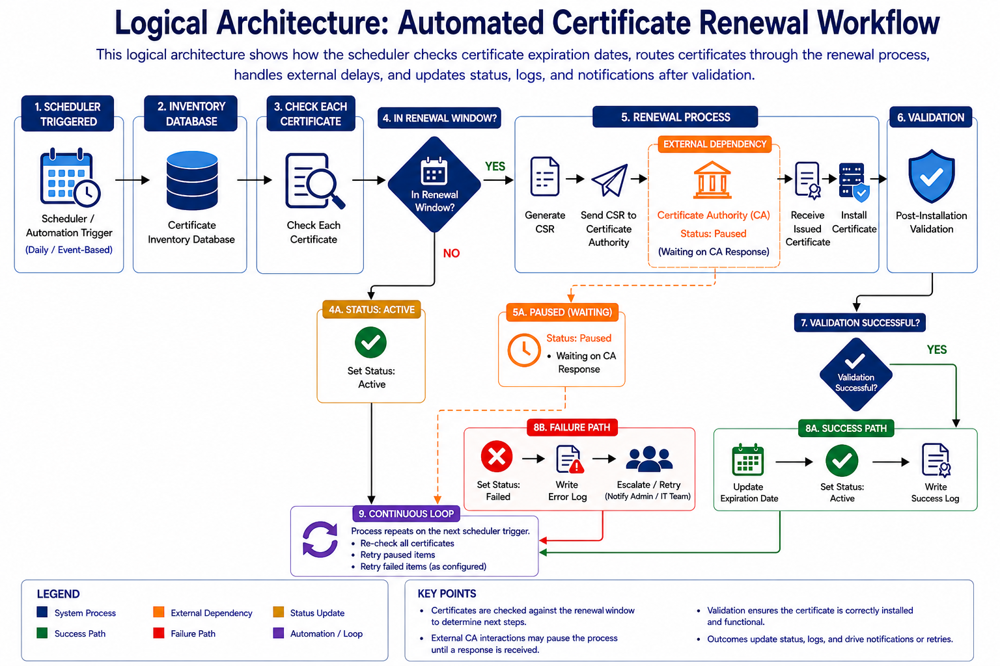

Problem
Certificate renewals are often manual, repetitive, and easy to miss. Failed or expired certificates can interrupt services and create security risks.
Solution
ReCert automates certificate lifecycle management by checking renewal windows, routing certificates through renewal workflows, and updating statuses after validation.
Key Features
- Certificate expiration tracking
- Renewal window detection
- CSR and CA workflow simulation
- Paused state for external delays
- Success and failure logging
Logical Architecture
The workflow begins with a scheduler checking the certificate inventory. Certificates inside the renewal window move through renewal, validation, success, or failure paths. External CA delays are handled using a paused state.

Team
Tyler Brashears
Project Manager
Abdurrahman Oyediran
Automation & Workflow Developer
Brady Moore
Frontend Developer
Kevon Scales
Backend Developer
Nichaela Barella
Automation & Workflow Developer
Tech Stack
Python
FastAPI
React
REST APIs
JSON Persistence
Git/GitHub
Workflow Automation
System Design